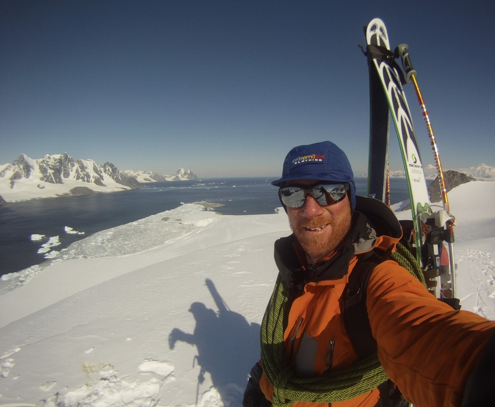

Paul Hart (Lt Cdr RNR)
Paul has been leading expeditions for over 30 years and is responsible for taking groups across the globe from the Polar Regions to the Himalayas, and from Alaska to the Jungle. As part of those journeys of discovery, Paul has faced some seriously challenging and, at times, life threatening situations; he has been avalanched on a number of occasions, been blown off high Ridges in the Himalayas, he has been capsized while kayaking through mountainous seas off the open ocean coast of Alaska and he has had his yacht come apart beneath him in storms in the Bay of Biscay. Despite this, Paul has never tired of wanting to venture into untrodden areas. Since 2012, this desire has been combined with undertaking science projects and educational outreach activities that follow in the footsteps of his heroes; Sir Robert Falcon Scott and Sir Ernest Shackleton.
Paul became a Fellow of the Royal Geographical Society after exploring a new route to climb Mt Shigri Parbat, in the Himachel Pradesh region of India. He has represented Great Britain in Dragon Boating and is a member of the St Moritz Tobogganing Club (otherwise known as the Cresta). Paul is drawn to this expedition to commemorate his fellow Royal Naval Reserve Officer, Sir Ernest Shackleton, who passed away on the eve of his own science and exploration expedition in 1922.
